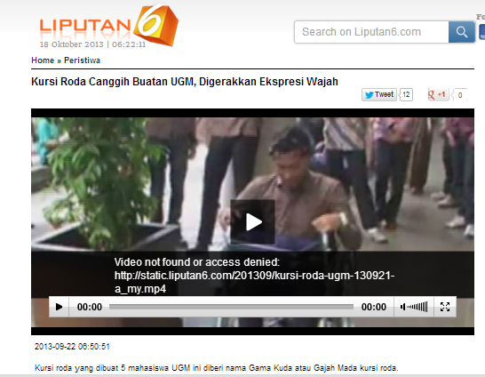
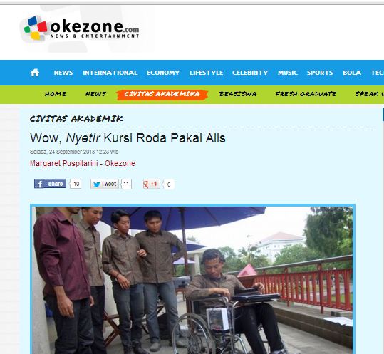
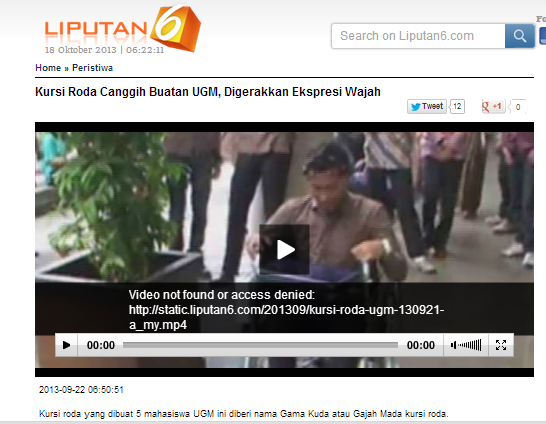
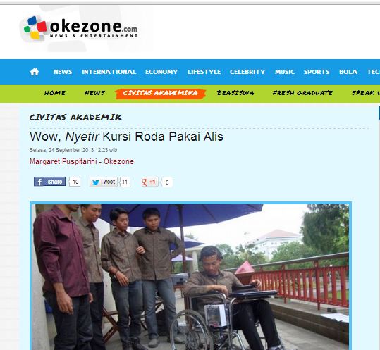
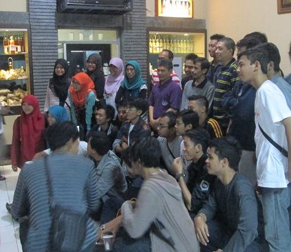
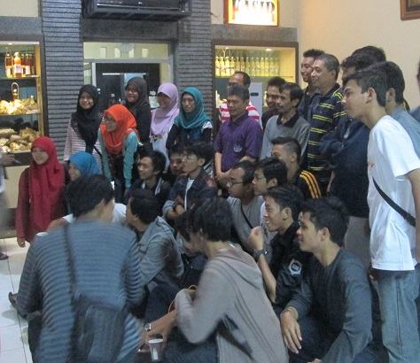

Gathering
KOMSI
KOMSI
PKM?
Program Kreativitas Mahasiswa
Kenapa Harus PKM?
Keuntungan Ikut PKM
- Sebelum PIMNAS :
Kegiatan bisa didanai
( max 12,5 juta )
Bidang kegiatan luas
2Pengabdian Masyarakat (PKM-M,PKM-T)
3Bisa Punya Usaha Sendiri (PKM-K)
4Peluang Lolos Besar
5- Setelah lolos PIMNAS :
- Perbaikan Gizi
- Wisata Terselubung
- Cari Jodoh Lintas Dewa
- Pimnas Kit
- Uang Saku
- Uang Hadiah
- Beasiswa Untuk Pemenang
- Sensasi Membawa Nama KOMSI, SV & UGM
- CV Bertambah
Eksis di Media
 
 
- Syarat Administratif
- Deadline Ditmawa dan Dikti
- Format Penulisan
- Nilai Proposal 40%
- Tema kreatif dan segar
- Judul unik dan menarik
- Ringkasan Padat dan Berisi
- BERUNTUNG
Terus pie mas nyari idenya?
- Masalah disekitar kita
- Usahakan berguna untuk masyarakat
- Ada Added value / Ide yang masih baru
- Cari referensi (ex : data PKM lolos Dikti & PIMNAS)
- Tema Difabel, Edukasi, Budaya, Kesehatan dan Lingkungan (Contoh)
Tips Membuat Judul
Judul yang unik dan menarik
Inovasi disisipkan dalam judul
Judul bikin penasaran
Judul HARUS bisa menjelaskan isi
Contoh :
- A. "Co-vable" : Usaha Coklat
- B. Pengembangan Usaha "Co-Vable" Chocholate Vegetable
Tips Tambahan
Pantau Website Dirmawa dan Dikti
Bacalah panduan PKM yang TERBARU !
Jangan takut share dan minta pendapat atas idemu
Cari anggota lintas bidang ilmu yang sesuai PKM
Jangan takut untuk terus mencoba
Rajinlah Beramal, Beribadah dan Berdoa
Jangan cuman ngomongin ide, bikin proposalmu !
KOMSI juga BISA !


Bandung / Semarang
Semoga Kita
Bisa Bertemu
Amin . . .

Terima Kasih
Derta Isyajora R
Derta Isyajora R